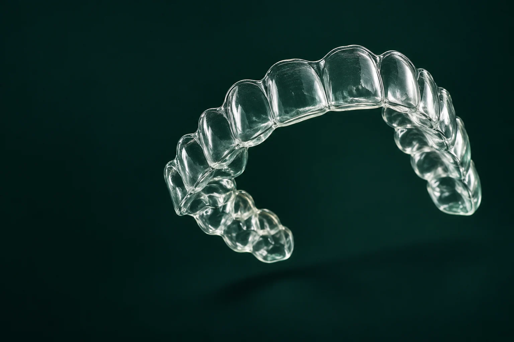

Small movements. A new perspective.

Conceptual dental illustrationOrthodontics shaped around your smile, your life and the way forward.
↓There is more than one way to smile.
01Align↗
Explore orthodontics and clear aligners. Suitability and follow-up are determined during assessment.
02Design↗
Discuss your smile goals and the aesthetic options that may be appropriate.
03Restore↗
Understand the evaluation and stages involved in implant and restorative care.

Expertise, with a human side.
Dr. Gregory Camacho trained in dentistry at Universidad del Zulia and in orthodontics and maxillary orthopedics at Universidad Santo Tomás. Each plan begins with a conversation about your individual case.
Meet the professional ↗See the detail.
Move the slider to explore a published case. Individual results do not predict your outcome.


A clear sequence. Wherever you begin.
- 01
Understand
Discuss your alignment goals and your current oral health.
- 02
Assess
The orthodontist evaluates the options and follow-up your case needs.
- 03
Coordinate
Confirm visits, language and timing before arranging travel.
- 04
Continue
Agree on contact and follow-up after returning home.
Your clinical assessment defines the plan. The sequence shown introduces the conversation.
Good questions. Clear next steps.
Can I start from the USA or Canada?+
Ask the practice about remote consultation, language and coordination for your individual case.
How long will my treatment take?+
Your clinician determines the plan, visits and follow-up after assessment. Confirm this before arranging travel.
Is this calendar connected to the clinic?+
This is a demonstration of the proposed experience. No appointment is booked and no data is sent. Use the official channels for real availability.